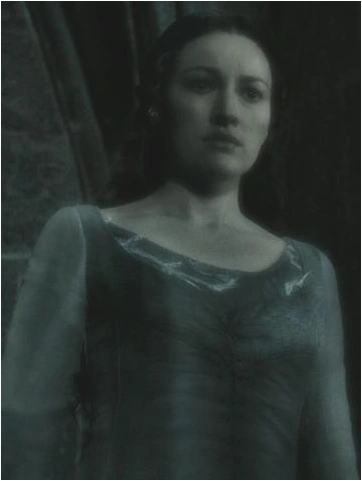

Hauslehrer

Filius Flitwick, der kleine Zauberkunstmeister mit Kobold-Abstammung, leitet Ravenclaw mit Herz und Humor. Ein begnadeter Duellant und begeisterter Lehrer, fesselt er seine Schüler mit magischen Wundern und quirliger Energie.
Gründer

Rowena Ravenclaw, Hogwarts-Mitgründerin, schätzte Witz, Weisheit und Lernbegierde. Ihr blaues Adlerwappen repräsentiert ihr Haus der Klugen und Kreativen.
Hausgeist
Frustrierte Tochter Rowena Ravenclaws, Helena, versteckt einst ein Diadem in Hogwarts aus Neid. Als Geist "Graue Lady" hadert sie mit der Vergangenheit und sucht das Diadem.